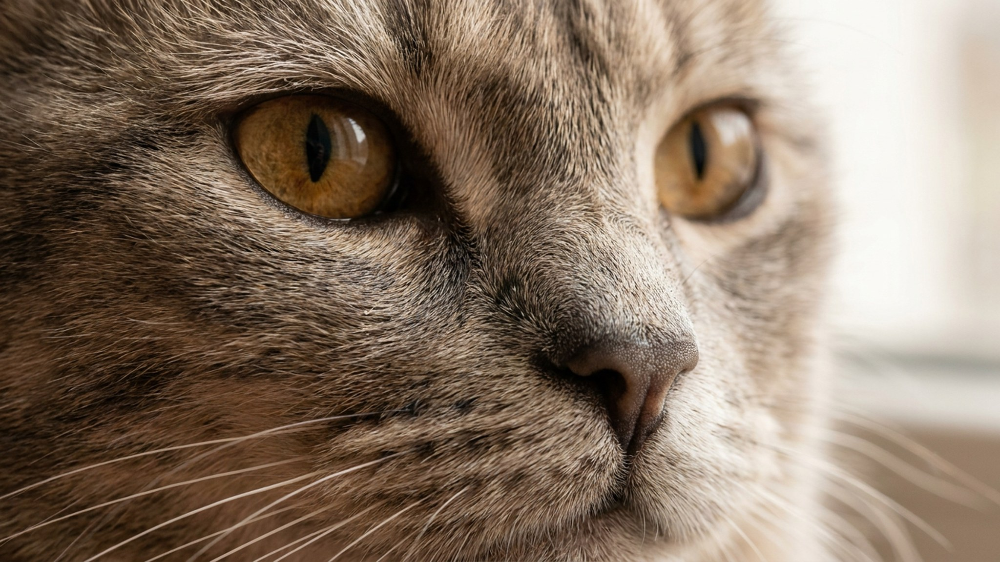

Он занимает диван рядом, а не на коленях — просто чтобы быть ближе. Шартрез редко мяукает и почти никогда не требует внимания криком, но стоит встать — и серая тень уже идёт следом. Это одна из немногих пород, где молчаливость означает глубокую привязанность, а не равнодушие. Если хотите кота, который не раздражает, но всегда рядом — читайте дальше.
🐾 Питомец ведёт себя странно?
AnimaLife расшифрует поведение кошки и собаки и подскажет, что делать. Попробуйте бесплатно прямо в мессенджере.
Шартрез — древняя французская порода, известная с XVII века. Плюшевая голубовато-серая шерсть, округлая широкая голова и чуть приподнятые уголки губ дали кошке прозвище «кот с улыбкой». Медно-янтарные или оранжевые глаза на пепельном фоне — один из самых узнаваемых образов в мире пород.
Телосложение у шартреза крепкое, мускулистое, лапы относительно тонкие — французы называют этот силуэт «картофелина на спичках». При этом двигается порода легко и ловко.
Шартрез почти не мяукает — голос тихий, используется редко. Это не безразличие: порода очень привязана к хозяину, просто выражает это присутствием, а не звуком. Кот ходит хвостом за человеком по квартире, наблюдает за делами и спокойно дожидается, пока на него обратят внимание.
Шерсть у шартреза двойная — плотный подшёрсток и мягкий верхний слой. Вычёсывать достаточно 1–2 раза в неделю; в период линьки — чаще. Шерсть почти не сваливается, но подшёрсток обильный, особенно весной.
Порода склонна к набору веса: шартрез некрупный, но широкий, и лишние граммы на таком телосложении нагружают суставы. Кормите по норме для возраста и активности, не оставляйте миску полной весь день. Игровые сессии 2 раза в день по 10–15 минут — хорошая профилактика гиподинамии. Шартрез охотно играет с удочкой и любит задачки на сообразительность.
Порода в целом крепкая. Плановые осмотры у ветеринара — раз в год для молодых кошек, чаще — после семи лет. Обсудите с ветеринаром питание и нужные вакцинации под образ жизни вашего питомца.
Следите за весом и подвижностью: если шартрез стал меньше двигаться или неохотно прыгает — повод для внепланового визита к врачу. Зубы чистите или предлагайте специальные жевательные лакомства для снижения налёта — при плановом осмотре ветеринар оценит состояние ротовой полости и при необходимости направит на профессиональную чистку.
🐾 Здоровье питомца под контролем
AI-ветеринар, дневник здоровья и персональные советы для вашего питомца — установите AnimaLife бесплатно.
🐾 Понравился разбор?
Подпишитесь на канал — каждый день разбираем по одному тревожному симптому у кошек и собак: что в пределах нормы, а когда пора к врачу. Подпишитесь, чтобы не пропустить разбор, который может спасти здоровье вашего питомца.
Материал носит информационный характер и не заменяет очную консультацию ветеринара.